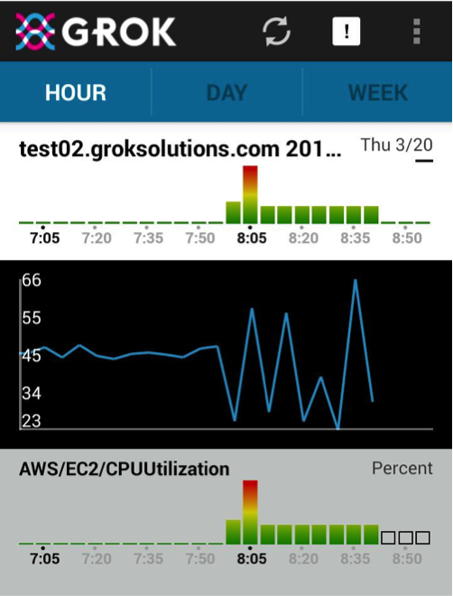
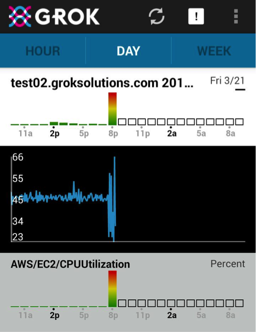
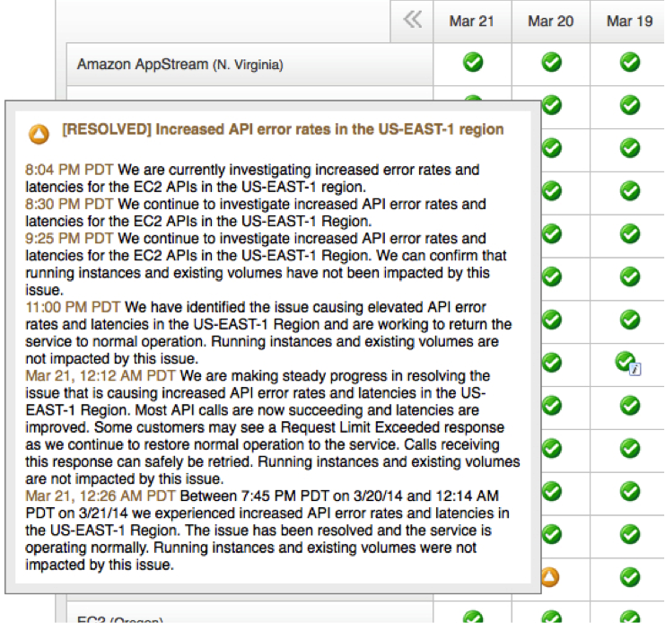

Anomaly of the Week
 Subutai Ahmad•VP Research
Subutai Ahmad•VP Research
NOTE: Numenta has announced a strategic partnership with Avik Partners, please read more about the future of Grok for IT Analytics.
It was Thursday night, March 20th, at 8pm. I was cleaning up the kitchen and getting ready to wind down when my smartphone buzzed: Grok had sent an alert. I know that with Grok it just takes a few seconds to check things out, kind of like text messages. So I clicked on the notification and looked at the graph. What followed was interesting and eye opening!
It turns out that on that night Amazon’s East coast datacenter, US-East-1, had some problems. AWS API call latencies slowly increased. Eventually by about 8:40 PM API calls were so slow as to be practically unusable. Any applications on those servers relying on the AWS API were unusable.
Below are two screen shots from the Grok mobile application showing the Hourly view and the Day view for that time period.


Notice that Grok flagged unusual behavior at 8pm, 35 minutes before Amazon’s API became completely unresponsive on the East Coast.
To understand this better, here’s a bit of information about this server. “test02” is a test server running an instance of Grok. We have servers in multiple regions but this particular server sits in US-East-1 and was affected by the incident. Our servers make lots of outgoing API calls as is typical for AWS applications. The blue line shows CPU load on test02. As API calls slowed down, retries and lags increased and the CPU load started became a bit wonky. Eventually Cloudwatch became unresponsive and the data stopped coming in. The really cool thing is that the alert happened 35 minutes before that point. Luckily test02 is just a test server. We keep most of our production stuff in US-West so this didn’t directly affect us. However I do know that plenty of US- East users were affected and could have benefited greatly from an early warning.
It is useful to think about whether this could have been caught by some other mechanism. First, any threshold based alerting system would NOT have caught the anomaly. CPU load of 66% is not unusual at all for this server. In fact there are times when the CPU goes close to 100% when this server trains new models so that’s out. A system looking at our service latencies would not have detected anything either – our web server was actually perfectly responsive the entire time. An anomaly detection scheme that relies on averages and standard deviations would not have worked. The incident happened too fast, within just a few 5-minute samples. A statistical technique that made a decision that fast would lead to tons of false positives on noisy data (including normal usage when CPU jumps to 100%!). You can see in the hour view how fast Grok turned red – Grok uses temporal sequences to detect unusual behavior. A more sophisticated training mechanism that relies on classifying known patterns also wouldn’t have worked. I have never seen this behavior before and would not have been able to predict it.
Isn’t that the whole point though? We need a system that automatically detects the unknown unknowns.
The above are actual snapshots from my smartphone for our server and this is an actual incident (I admit I dramatized the first paragraph – let’s blame marketing for that :-). For the record, below is a snapshot of the AWS status page. Amazon states that no instances were affected and this is true – we can attest that our machines kept running fine. On the other hand, any code that relied on the AWS API was drastically affected by this incident.

In general AWS does an amazing job of keeping their infrastructure up and running but occasional incidents do happen. These incidents are unpredictable and they are unavoidable. It is comforting to know that Grok can give me a heads up and some lead-time to investigate and figure out what to do. In a production context I would have had plenty of time to spin up servers in another region and redirect my traffic there.
Subutai Ahmad•VP Research